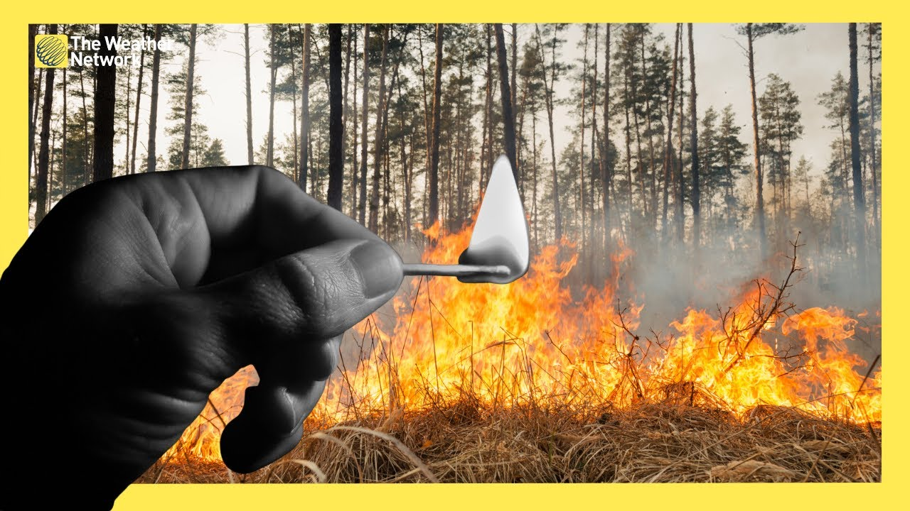

Forest fires caused by human activity are increasingly destroying ecosystems. These fires can start from unattended campfires, discarded cigarettes, or even sparks from vehicles. The consequences are severe, leading to the destruction of habitats, killing countless plant species, and disturbing the natural balance.

Impact on Ecosystems
Fires destroy native plant life, which in turn affects the animals that rely on them. Soil quality decreases, water sources become polluted, and biodiversity takes a massive hit. Recovery can take decades, and some species may never return.
How We Can Prevent Forest Fires
Never leave a campfire unattended. Make sure it's fully extinguished before leaving.
Properly dispose of cigarette butts—never toss them into dry grass or forest areas.
Avoid burning debris on windy days and always have water nearby.
Follow local fire regulations and report any suspicious activities.
Educate others about fire safety and responsible behavior in nature.
Interactive Fire Map
View current forest fire incidents across the region: